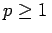
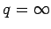
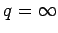
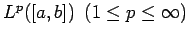
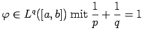
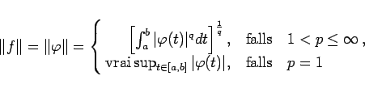
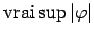
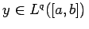
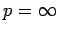

Inhalt Index DeskTop Bronstein

 Funktionalanalysis Stetige lineare Operatoren und Funktionale Stetige lineare Funktionale
Funktionalanalysis Stetige lineare Operatoren und Funktionale Stetige lineare Funktionale


Sei . Man nennt q den zu p konjugierten Exponenten, wenn  gilt, wobei man  im Falle p=1 setzt.
gilt, wobei man  im Falle p=1 setzt.
| Beispiel |
|
Aufgrund der HÖLDERschen Ungleichung für Integrale kann das Funktional (12.161) auch auf den Räumen  betrachtet werden, falls  ist. Seine Norm ist dann |
|  | (12.164) |
(bzgl. der Definition von  s. (12.209)). Zu jedem linearen stetigen Funktional f im Raum Lp([a,b]) gibt es ein (bis auf seine Äquivalenzklasse) eindeutig bestimmtes Element , so daß
gelten. Für den Fall  s. Lit. 12.18.